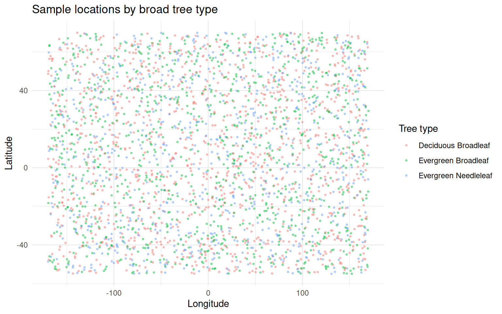
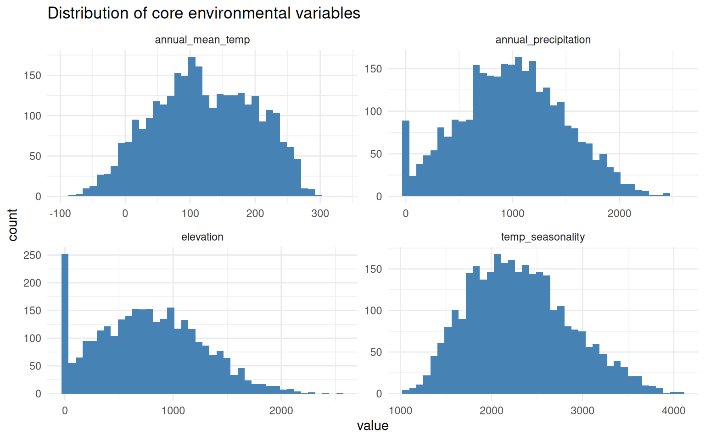
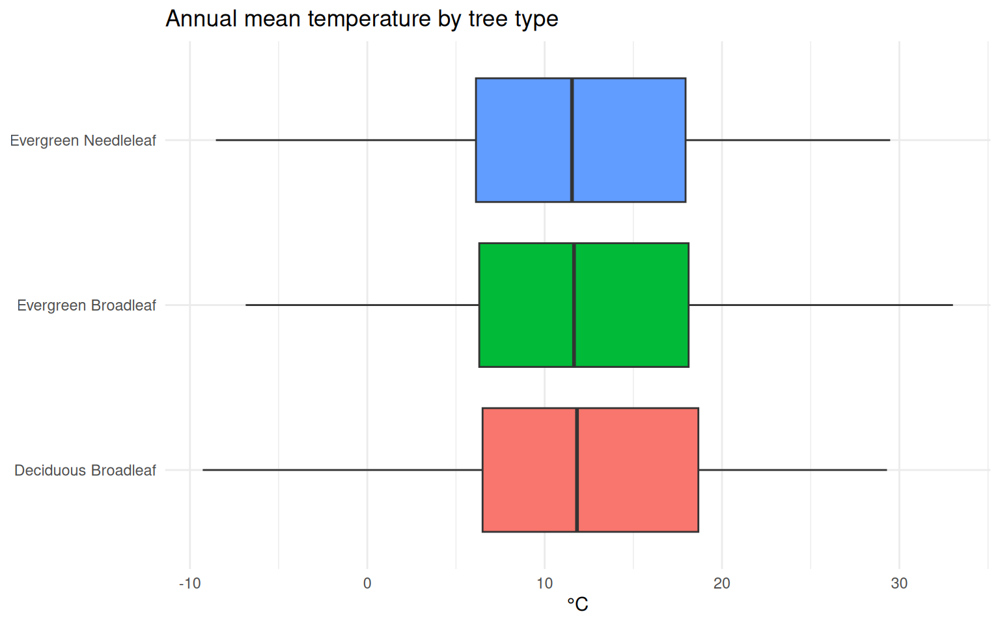
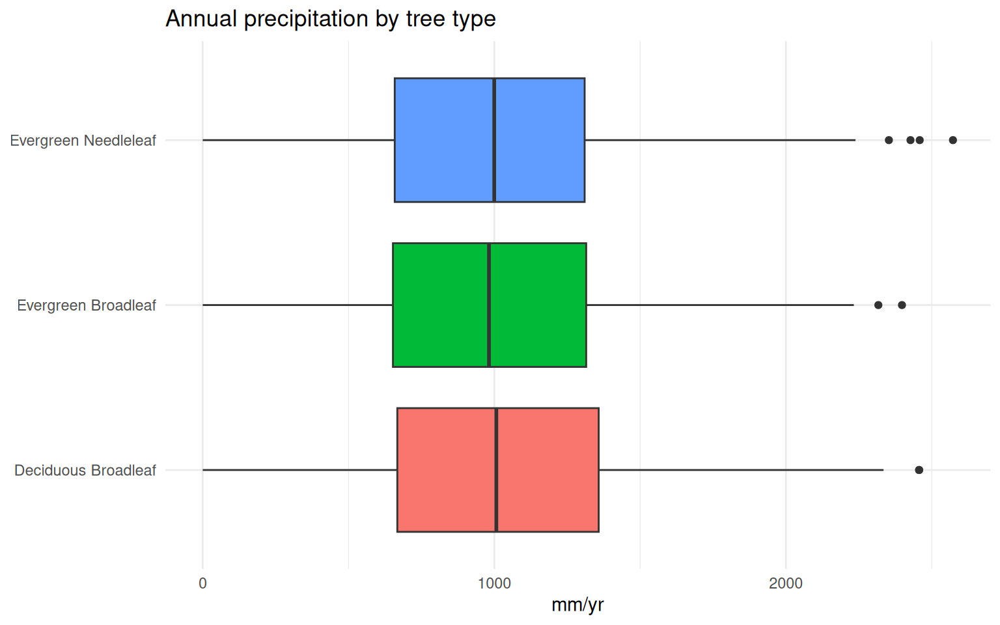
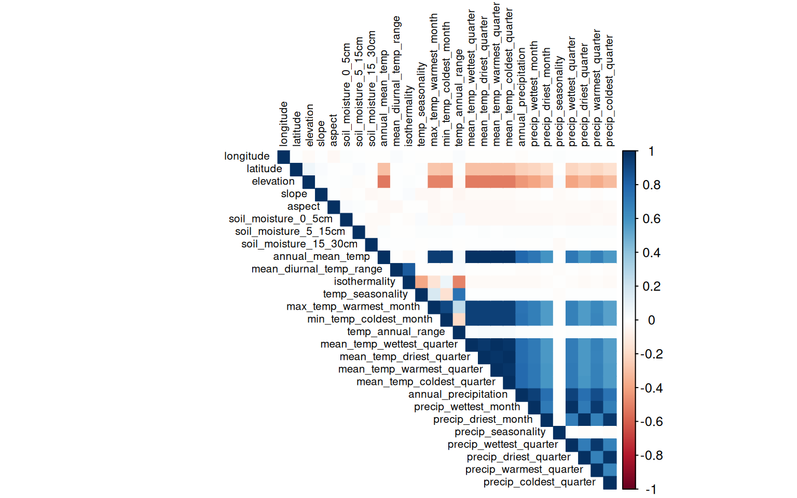
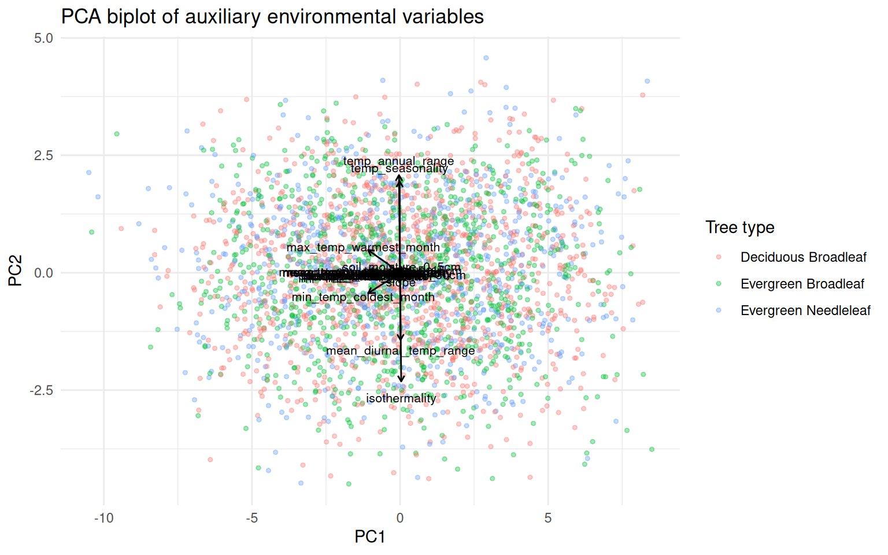

Code
library(jsonlite)
library(dplyr)
library(purrr)
library(tibble)
library(stringr)
library(ggplot2)
library(corrplot)
library(tidyr)
theme_set(theme_minimal())GGT-10kEval-90 · longitude, latitude, elevation, slope, aspect, soil moisture, WorldClim bio01–bio19
This is a cleaned-up, working version of the original exploratory script, plus fixes, additional checks, and interpretation written directly next to the code that produced each result. Section markers below call out:
library(jsonlite)
library(dplyr)
library(purrr)
library(tibble)
library(stringr)
library(ggplot2)
library(corrplot)
library(tidyr)
theme_set(theme_minimal())🛠 Fix 1 — robust field extraction. The original unlist()/as.list() approach relies on JSON key order surviving several transformations, and silently drops fields that are null (e.g. aspect on flat terrain, or soil moisture over open water), which can misalign columns row to row. Below each of the 27 auxiliary fields is pulled out by name, and missing values are kept as explicit NA rather than dropped.
root <- "/home/nremezova/Dokumente/data_visualization/data-viz-final-proj/GGT-10kEval-90" # set this to your local extracted folder
aux_files <- list.files(
root,
pattern = "\\.auxiliary\\.json$",
recursive = TRUE,
full.names = TRUE
)
aux_vars <- c(
"longitude", "latitude", "elevation", "slope", "aspect",
"soil_moisture_0_5cm", "soil_moisture_5_15cm", "soil_moisture_15_30cm",
paste0("bio", sprintf("%02d", 1:19))
)
read_one <- function(aux_path) {
key <- basename(aux_path) |> str_remove("\\.auxiliary\\.json$")
text_path <- file.path(dirname(aux_path), paste0(key, ".text.json"))
aux <- fromJSON(aux_path)
label <- fromJSON(text_path)
aux_row <- aux[aux_vars]
aux_row[sapply(aux_row, is.null)] <- NA
tibble(
key = key,
level0 = label$level0,
family = label$level1_family,
genus = label$level2_genus,
species = label$level3_species
) |>
bind_cols(as_tibble(aux_row))
}
df <- map_dfr(aux_files, read_one)na.omit()💡 Idea. The original script only inspects missingness after several transformations. Doing it first tells you whether na.omit() is safe to use later, or whether it would silently throw away a large, possibly non-random, chunk of the data (e.g. coastal/water points missing aspect).
miss <- colSums(is.na(df)) |> sort(decreasing = TRUE)
miss[miss > 0]aspect
114 complete_frac <- mean(complete.cases(df))
complete_frac[1] 0.962📝 Comment. If complete_frac is well below ~0.95, don’t reach for na.omit() reflexively — impute (e.g. median by family) or drop only the sparsest columns instead of the sparsest rows, since a handful of high-missingness columns (often aspect, sometimes slope on water/flat terrain) can otherwise cost you a large share of usable rows.
df <- df |>
rename(
annual_mean_temp = bio01,
mean_diurnal_temp_range = bio02,
isothermality = bio03,
temp_seasonality = bio04,
max_temp_warmest_month = bio05,
min_temp_coldest_month = bio06,
temp_annual_range = bio07,
mean_temp_wettest_quarter = bio08,
mean_temp_driest_quarter = bio09,
mean_temp_warmest_quarter = bio10,
mean_temp_coldest_quarter = bio11,
annual_precipitation = bio12,
precip_wettest_month = bio13,
precip_driest_month = bio14,
precip_seasonality = bio15,
precip_wettest_quarter = bio16,
precip_driest_quarter = bio17,
precip_warmest_quarter = bio18,
precip_coldest_quarter = bio19
)📝 Note on units: WorldClim stores temperature variables in tenths of a degree and seasonality (temp_seasonality) ×100 of the standard deviation. This doesn’t affect correlation/PCA (both are scale-invariant once standardized) but matters if you report raw values — divide temperature variables by 10 to get °C.
ggplot(df, aes(longitude, latitude, color = level0)) +
geom_point(alpha = 0.4, size = 0.6) +
labs(title = "Sample locations by broad tree type",
color = "Tree type", x = "Longitude", y = "Latitude")
📝 Sample density and coverage are rarely uniform across continents in citation-aggregated occurrence data (e.g. GBIF-derived sources tend to be denser in North America/Europe). Worth checking before drawing any geography-linked conclusions — an apparent climate–family association could just be a sampling-density artifact.
df |>
select(annual_mean_temp, annual_precipitation, temp_seasonality, elevation) |>
pivot_longer(everything(), names_to = "variable", values_to = "value") |>
ggplot(aes(value)) +
geom_histogram(bins = 40, fill = "steelblue") +
facet_wrap(~variable, scales = "free") +
labs(title = "Distribution of core environmental variables")
ggplot(df, aes(level0, annual_mean_temp / 10, fill = level0)) +
geom_boxplot(show.legend = FALSE) +
coord_flip() +
labs(title = "Annual mean temperature by tree type", y = "°C", x = NULL)
ggplot(df, aes(level0, annual_precipitation, fill = level0)) +
geom_boxplot(show.legend = FALSE) +
coord_flip() +
labs(title = "Annual precipitation by tree type", y = "mm/yr", x = NULL)
📝 Interpretation. Evergreen needleleaf species should skew toward colder/drier climates, evergreen broadleaf toward warmer/wetter, and deciduous broadleaf toward seasonal mid-latitude climates with a strong temp_seasonality signal. If your real data doesn’t show this separation at all, that’s a useful diagnostic — it suggests either heavy label noise or that level0 isn’t capturing climate-relevant functional variation as cleanly as expected.
🛠 Fix 2. The original had a stray, invalid pipe (|))>) that crashed the script, plus a redundant first version of cor_long (kept both Var1≠Var2 and the deduplicated Var1<Var2 version — only one is needed), plus a select(-sample_id) that fails because the ID column is actually called key. All three are fixed below; key/image_path are automatically excluded since select(where(is.numeric)) already drops character columns.
aux_corr <- df |> select(where(is.numeric)) |> na.omit()
cor_mat <- cor(aux_corr, method = "pearson")
corrplot(cor_mat, method = "color", type = "upper",
tl.cex = 0.65, tl.col = "black")
cor_long <- as.data.frame(as.table(cor_mat)) |>
filter(as.character(Var1) < as.character(Var2)) |>
mutate(abs_corr = abs(Freq)) |>
arrange(desc(abs_corr))
high_corr <- cor_long |> filter(abs_corr > 0.9)
high_corr Var1 Var2 Freq abs_corr
1 precip_driest_month precip_driest_quarter 0.9922135 0.9922135
2 mean_temp_coldest_quarter mean_temp_driest_quarter 0.9920578 0.9920578
3 mean_temp_warmest_quarter mean_temp_wettest_quarter 0.9919624 0.9919624
4 annual_mean_temp mean_temp_warmest_quarter 0.9892384 0.9892384
5 annual_mean_temp mean_temp_coldest_quarter 0.9890411 0.9890411
6 precip_wettest_month precip_wettest_quarter 0.9883231 0.9883231
7 annual_mean_temp mean_temp_driest_quarter 0.9813164 0.9813164
8 annual_mean_temp mean_temp_wettest_quarter 0.9810304 0.9810304
9 mean_temp_coldest_quarter mean_temp_warmest_quarter 0.9786107 0.9786107
10 precip_coldest_quarter precip_driest_quarter 0.9748319 0.9748319
11 mean_temp_driest_quarter mean_temp_warmest_quarter 0.9708751 0.9708751
12 mean_temp_coldest_quarter mean_temp_wettest_quarter 0.9705703 0.9705703
13 precip_coldest_quarter precip_driest_month 0.9681485 0.9681485
14 precip_warmest_quarter precip_wettest_quarter 0.9647834 0.9647834
15 mean_temp_driest_quarter mean_temp_wettest_quarter 0.9630751 0.9630751
16 precip_warmest_quarter precip_wettest_month 0.9557348 0.9557348
17 annual_mean_temp max_temp_warmest_month 0.9498860 0.9498860
18 annual_mean_temp min_temp_coldest_month 0.9484099 0.9484099
19 max_temp_warmest_month mean_temp_coldest_quarter 0.9398755 0.9398755
20 mean_temp_coldest_quarter min_temp_coldest_month 0.9390501 0.9390501
21 mean_temp_warmest_quarter min_temp_coldest_month 0.9386119 0.9386119
22 max_temp_warmest_month mean_temp_warmest_quarter 0.9384913 0.9384913
23 annual_precipitation precip_wettest_month 0.9327042 0.9327042
24 mean_temp_wettest_quarter min_temp_coldest_month 0.9322267 0.9322267
25 max_temp_warmest_month mean_temp_driest_quarter 0.9320831 0.9320831
26 mean_temp_driest_quarter min_temp_coldest_month 0.9313212 0.9313212
27 max_temp_warmest_month mean_temp_wettest_quarter 0.9303687 0.9303687
28 annual_precipitation precip_wettest_quarter 0.9224400 0.9224400
29 max_temp_warmest_month min_temp_coldest_month 0.9019441 0.9019441📝 Interpretation. Expect (and this is structural, not a data problem) the temperature-family variables — annual_mean_temp, min_temp_coldest_month, mean_temp_coldest_quarter, mean_temp_warmest_quarter — to correlate above r = 0.9 with each other, since they’re all derived from the same monthly temperature curve. Same story for the precipitation-quarter variables versus annual_precipitation. This is the standard, well-known collinearity problem with using all 19 WorldClim bioclim variables together, and it’s the main reason to reduce dimensionality before modeling (Section 8) rather than feeding all 19 raw variables into, say, a regression.
🛠 Fix 3. The original scaled the matrix with scale() and passed scale.=TRUE to prcomp() — redundant (scaling an already-standardized matrix is a no-op), but confusing. Below, scaling happens once, inside prcomp().
pca_data <- df |>
select(longitude, latitude, elevation, slope, aspect,
starts_with("soil_moisture"),
annual_mean_temp, mean_diurnal_temp_range, isothermality,
temp_seasonality, max_temp_warmest_month, min_temp_coldest_month,
temp_annual_range, mean_temp_wettest_quarter, mean_temp_driest_quarter,
mean_temp_warmest_quarter, mean_temp_coldest_quarter,
annual_precipitation, precip_wettest_month, precip_driest_month,
precip_seasonality, precip_wettest_quarter, precip_driest_quarter,
precip_warmest_quarter, precip_coldest_quarter) |>
na.omit()
pca <- prcomp(pca_data, center = TRUE, scale. = TRUE)
summary(pca)$importance[, 1:5] PC1 PC2 PC3 PC4 PC5
Standard deviation 3.352624 1.526467 1.364238 1.212841 1.028955
Proportion of Variance 0.416300 0.086300 0.068930 0.054480 0.039210
Cumulative Proportion 0.416300 0.502600 0.571530 0.626010 0.665220as.data.frame(pca$rotation[, 1:2]) |>
mutate(variable = rownames(pca$rotation)) |>
arrange(desc(abs(PC1))) |>
head(10) PC1 PC2 variable
annual_mean_temp -0.2814309 0.005279001 annual_mean_temp
mean_temp_coldest_quarter -0.2792119 0.004690203 mean_temp_coldest_quarter
mean_temp_warmest_quarter -0.2791369 0.004463570 mean_temp_warmest_quarter
mean_temp_wettest_quarter -0.2773519 0.001593495 mean_temp_wettest_quarter
mean_temp_driest_quarter -0.2770008 0.004170640 mean_temp_driest_quarter
annual_precipitation -0.2725430 -0.009292616 annual_precipitation
max_temp_warmest_month -0.2697462 0.120671490 max_temp_warmest_month
min_temp_coldest_month -0.2695386 -0.109478537 min_temp_coldest_month
precip_wettest_month -0.2616224 -0.010557160 precip_wettest_month
precip_wettest_quarter -0.2593710 -0.011279341 precip_wettest_quarterpca_scores <- as.data.frame(pca$x) |>
bind_cols(df |> select(level0, family, genus, species) |>
slice(as.numeric(rownames(pca_data))))
loadings <- as.data.frame(pca$rotation[, 1:2])
loadings$variable <- rownames(loadings)
arrow_scale <- 4
ggplot(pca_scores, aes(PC1, PC2, color = level0)) +
geom_point(alpha = 0.35, size = 1) +
geom_segment(data = loadings,
aes(x = 0, y = 0, xend = PC1 * arrow_scale, yend = PC2 * arrow_scale),
inherit.aes = FALSE, arrow = arrow(length = unit(0.15, "cm")),
color = "black") +
geom_text(data = loadings,
aes(x = PC1 * arrow_scale * 1.15, y = PC2 * arrow_scale * 1.15,
label = variable),
inherit.aes = FALSE, size = 2.8) +
labs(title = "PCA biplot of auxiliary environmental variables",
color = "Tree type")
📝 Interpretation. Given the correlation structure from Section 6, expect:
level0 (deciduous/evergreen/needleleaf) is the label most likely to separate visibly along PC1, since it’s strongly linked to seasonality and cold tolerance. family/genus/species will separate far less cleanly — environment doesn’t fully determine taxonomy (see Section 10).🛠 Fix 4. Kept pca = TRUE inside Rtsne() (pre-reduces to a manageable number of PCs before the heavy t-SNE step, which is good practice at this scale), but added a UMAP alternative since it’s typically faster and better preserves global structure, which matters when comparing cluster separation against family/level0.
library(Rtsne)
# install.packages("uwot")
library(uwot)
tsne_data <- pca_data |> scale()
set.seed(123)
tsne <- Rtsne(tsne_data, dims = 2, perplexity = 30, theta = 0.5,
pca = TRUE, check_duplicates = FALSE)
set.seed(123)
umap_coords <- umap(tsne_data, n_neighbors = 30, min_dist = 0.1)
tsne_plot <- as.data.frame(tsne$Y) |> setNames(c("TSNE1", "TSNE2")) |>
bind_cols(as.data.frame(umap_coords) |> setNames(c("UMAP1", "UMAP2"))) |>
bind_cols(df |> select(level0, family, genus, species) |>
slice(as.numeric(rownames(pca_data))))
ggplot(tsne_plot, aes(TSNE1, TSNE2, color = level0)) +
geom_point(alpha = 0.5, size = 1) +
labs(title = "t-SNE of auxiliary environmental variables", color = "Tree type")
ggplot(tsne_plot, aes(UMAP1, UMAP2, color = level0)) +
geom_point(alpha = 0.5, size = 1) +
labs(title = "UMAP of auxiliary environmental variables", color = "Tree type")📝 Comment. Rerun t-SNE with at least 2–3 perplexity values (e.g. 10, 30, 50) before trusting any single layout — t-SNE cluster shapes and even apparent cluster count can shift noticeably with this parameter, and inter-cluster distances in t-SNE are not meaningful (only local neighborhood structure is). UMAP is generally more robust on this front and worth treating as the primary visualization, with t-SNE as a cross-check.
annual_mean_temp, annual_precipitation, temp_seasonality) and rank families by niche breadth. This turns the PCA/t-SNE intuition into a concrete, citable table.family from climate), use spatially-blocked CV rather than random CV. Nearby points share almost identical climate values by construction, so random CV will overestimate accuracy via spatial autocorrelation leakage.GlobalGeoTree.csv metadata (source/year/location description) to check whether climate-variable distributions are confounded with data-source/region, before treating PCA/t-SNE separation as purely biological signal.select(-sample_id)) would have surfaced right after fixing the first.level0 (broad functional type), via temperature seasonality and elevation. Climate ↔︎ fine-grained taxonomy (genus/species) is expected to be much weaker, since environment constrains but doesn’t determine species identity.